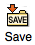
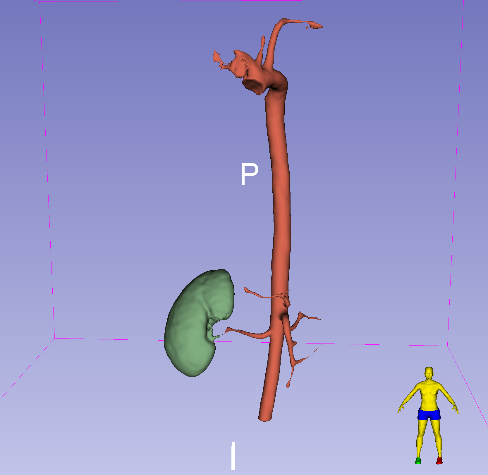

Segmenting a Contrast-Enhanced CT Volume
Medical image segmentation is the process of dividing a medical image into regions or segments that represent different tissue types or categories. The goal is to identify areas of interest, such as tumors, lesions, or other abnormalities. In this module, will we use 3D Slicer to segment the Kidneys, Aorta, Lungs, and everything else from the CTACardio Sample dataset.
Extensions Required
- Lung CT Analyzer & Segmenter
- SegmentEditorExtraEffects
Background information
Before we segment, we should have a reasonable understanding of the methodology used to acquire the volume:
What is a CT Angiogram?
Computed tomography angiography (also called CT angiography or CTA) is a CT technique used for angiography (blood vessel imaging). For CTA, you inject a contrast agent (e.g. iodine) into the patient's bloodstream to better visualize the arteries and veins throughout the human body.
For this segmentation project, we will take advantage of the added contrast to segment the kidneys and aorta.
Load Volume and Review
-
Click on "Download Sample Data" button:

-
Select "Download CTACardio"
-
Switch to the
Volumesmodule
-
Set the Active Volume to "CTACardio"
Volume Information for CTACardio
Volume and Voxel sizes: How many voxels in the volume and how large is each voxel?
- Volume Size: \(512 * 512 * 321 = 84,148,224\) voxels (~84 million)
- Voxel Size: \(0.93 * 0.93 * 1.25 = 1.08 mm^3\)
Are the voxels isotropic or anisotropic?
anisotropic
What is the dynamic range of the volume?
-1024 to 3532
Adjust Volume Display
In the Volumes module, under the Display Tab, select the CT-Abdomen preset:
Volume rendering

Volume rendering is a great way to determine which parts of the volume have high contrast
- Bring up the
Volume Renderingmodule. - Select "CTACardio" volume in the Volume menu
- Click open the
eyeicon to render the volume
Volume Rendering Controls for CTACardio

Adjust Rendering
- Slide the Shift slider back and forth to reveal different aspects of the volume
- Notice how bright the veins are in the patients arm
- Slide the Shift slider to the left to reveal the oxygen tank sitting atop the patient's chest
- Select the "CT-Chest Contrast Enhanced" Preset
- Slide the Shift slider to the right to reveal the kidneys


Notice that the kidneys, heart, vasculature, bones all segment out at the similar intensity mappings. This means that it will not be possible to use a simple threshold to segment these organs individually
Optional: Crop volume down to the Right Kidney
Adjust the ROI to capture just the right kidney:
1. In the `Volume Rendering` module, Check "Enable" crop and click on "Display ROI"
2. Adjust the ROI to encompass just the right kidney
3. Under the Advanced Tab, click on the "Scalar Opacity Mapping" function to adjust the transparency of the volume
4. Hide the Crop ROI
You should see something that looks like this:

The kidney is surrounded by ribs and the spinal column which imaged with similar levels of intensity. So, if we use basic thresholding, we will need to clean up a lot of the segmentation surrounding the kidney
Before continuing, turn off the 3D render by clicking the eye icon closed
Inspect Voxel Intensities
The most basic segmentation techniques involve thresholding, in which an intensity cut-off value is used to create a mask. For this exercise, we want to first segment the cortex of the kidneys, so let's inspect the intensity inside the kidney and in the tissue surrounding the kidneys.
Let's start with Right kidney. Remember, we should look at the right kidney in all three views. To help align the views, we will turn on the Crosshair tool (  ), which adds crosshairs to each view to show the center of the alignment.
), which adds crosshairs to each view to show the center of the alignment.
-
In the top toolbar, hold down the Crosshair tool menu and make sure the following menu items are selected:
-
Click on the Crosshair tool to activate
- In the 2D viewers, scrub to the slices that show the right kidney.
-
Hold shift while you hover the mouse pointer over one kidney view to align all three views. The slice iteration lines will jump to the mouse when you hold shift. There should be yellow crosshairs in all three views to indicate the center of the alignments

-
Release shift and move the mouse pointer over the kidney and surrounding tissue inspect the intensity values of the voxels
- Compare the intensity value of the kidney to the tissue surrounding the kidney and to the spinal column. Make note of these intensity values:
- Kidney:
~245 - Surrounding Tissue,
~80 - Vertebrae:
~300-1000.
- Kidney:
Preprocess Volume
Crop Volume
Segmentation projects are often memory intensive. So, is often useful to crop the volume down to the bare minimum needed for the segmentation project. For analysis of the segmentations, it is also useful to resample the voxels so that they are isotropic.
Create ROI
- Switch to the
Volume Renderingmodule - Enable and display the crop ROI
- If the crop is still specific to the right kidney, click on the "Fit to Volume" icon so the ROI covers the entire volume
- Crop out the table and as much of the wires as you can manage
Crop Module
Switch to the Crop module by searching for the module using the magnifying glass

In the crop module, use the following settings:

- Input volume: "CTACardio"
- Input ROI: "Volume rendering ROI" - this is the ROI that we created in the
Volume Renderingmodule - Output Volume: Create a new volume as "CTACardioCrop"

- Check on "Interpolated cropping"
- Reveal the Volume Information tab
Notice that the new, cropped volume will have isotropic voxels.
Click Apply to crop (scroll down from Volume Information if you don't see the Apply button). The new cropped volume (CTACardioCrop) should appear in the viewers.
If the Cropped volume is not displayed, select it in all the slice viewers:

Steps before continuing
Return to the Volume Rendering module
- Turn off Volume Rendering (click eye icon closed)
- Hide the ROI (click Display ROI off)
Return to the Volume module
- Set the
Volumeto 'CTACardio Crop` - Select the 'CT-Abdomen' preset under the
Displaytab
You should now see the following in the Slice Viewers:

4UP View of CTACardio Crop. No 3D Render, no Crop ROI.
Filter Volume
Optional.
You can also filter a volume before you segment.
Median Filter Settings
- Open the
Median Image Filtermodule - Use the default settings (Neighborhood Size
1,1,1) - Input Volume: CTACardioCrop
- Output Volume: CTACardioCrop
- Click
APPLY

These settings will overwrite the cropped volume with a filtered version of the volume.
Segment Editor
When you segment in Slicer, you create a new Segmentation Volume (or label map) that has the same number of voxels as the original volume. This segmentation volume contains whole numbers to indicate the segmentations. For example, after the following steps, all voxels pertaining to the right kidney will be labeled with a value, like 1. This is not an intensity value, but a label that's why they can also be called label maps. We will also segment the left kidney all those voxels will be labeled with a different value, like 2. Voxels not segmented will have a label of 0.
The Segment Editor module creates and manages segmentations.
Bring up the Segment Editor Module: 
The Editor has three main parts:

- Segmentation Settings: Region at the top, where you create the Segmentation Volume and select the Source Volume
- Segmentation Table: Organizing segmentations (e.g. color and label name)
- Toolbar: Segmentation Tools
Segmentation Settings
At the top of the Segment editor, create the following settings:
- Set the
Segmentationby selecting 'Rename the Current Segmentation' and adding your last name to the segmentation, as follow: 'LastName Segmentation' - Set the
Source Volumeto 'CTACardio Crop'
Add Segmentations to the Segmentation table
- Click the Add button

- A Segmentation row should appear in the Segmentations table. The name should be "Segment_1" (or something similar)
This table organizes the Segmentation Labels. Currently, we just have one Named Label: "Segment_1". And its selected. So, any segmentation you add using the Segment Editor tools will have the label of "Segment_1". We are going to use this label as a placeholder label, so let's move onto the next step.
Segment the Kidneys using the Threshold Tool

Bruce Blaus Kidney - Medical gallery of Blausen Medical 2014
We can segment the kidneys using the Threshold tool. The threshold tool segments the volume based on a Threshold Range (or Intensity Range). You set the low and high end of the range, and the tool will segment all voxels that fall in that intensity range with the selected label (i.e. "Segment_1"). Here, we take advantage of the fact that contrast has been added to the patient, which makes the Kidneys very bright in comparison to the surrounding tissue.

Bring up the threshold tool by clicking on its icon in the toolbar (top row of toolbar). This will bring up the Threshold Tool. There should now be a flashing green color in Slice Viewers
The flashing color indicates which voxels would be segmented if you applied the threshold.
Next, adjust the Threshold Range to range from 190 to 300
Click Apply.
- The editor will jump back to the Segmentation Table View
- Click on the 'Show 3D' button:

You should now see the following in the 3D view:

The initial threshold result is a bit messy, but we can easily clean it up. The important thing is that we have clearly and fully segmented both kidneys.
Clean up Segmentation using the Islands Tool
First we will remove a lot of the segmentation noise using the "Remove Small Islands" command, which removes any connected components smaller that the indicated value.
Remove Small Islands
Bring up the Island Tool by clicking on its icon:
- Select "Remove small islands"
- Set
Minimum sizeto2000 voxels - Click Apply
Now both Kidneys are clearly separate segmentations.
Use the Scissors tool remove the Ureter and vasculature from the kidneys
- Select the Scissor tool
- Select the Segment you want to cut in the Segmentations table
- In the 3D viewer, use the scissor tool to draw around the ureter and vasculature that you want to remove
- Make sure there is nothing behind the ureter or vasculature when you remove them
- You may need several cuts to remove everything
- You can combine scissor cuts with removing small islands

Change the Label Values for both Kidneys
For this step, we add new labels to the Segmentation Labels table and then switch the labels of each kidney.
Add Kidney Labels to table

- Click the Add button and add a new Label for the Left Kidney
- Click the Add button and add a new Label for the Right Kidney
The segmentation colors should be different from "Segment_1" so, not green.

Change the Label for the Left Kidney
- Select the Left Kidney label so that it is highlighted in the Segmentation Table, as shown above
- In the Islands Tool, select "Add selected island"
- In one of the Slice viewers, click on the Left Kidney
- Make sure you click on the correct one!
- Hint, review the Data Probe before you click.
- This will not work in the 3D viewer
- The Label for the Left Kidney should change
Repeat the Process for the Right Kidney.
Verify that you have successfully changed the labels by hovering over the kidney segmentations in the viewer and review the information the Data probe.
If everything works, select Segment_1 label in the table and click on Remove. You should now have two segmented kidneys and nothing else.
Segmentation Cleanup
We can clean-up our segmentations using the Scissors tool to cut away extraneous regions and Morphological operations, such as the Islands and Smoothing Tools.
Smoothing

You can remove extrusions or close holes using the smoothing tool
- Click on the Smoothing icon
Smoothing Method: "Gaussian"Standard Deviation: "1.00mm"- Apply

Save Data
Time to save your hard work!
- Click on the save icon: 
- In the dialog, Click on the "Change directory" button
- In the file dialog that appears, create a new folder called 'CTACardio' and then click Choose

- Back in the Save Dialog, Choose "Save"
- Everything in the table that is checked will be saved.
Segment the Aorta

Adapted from Aorta, Clevand Clinic.
For the Aorta, we will use a different segmentation method. First, though, we need to create the segmentation volume.
- In the
Segment Editormodule, Click on the Add Button - Rename the new segmentation "Aorta"
- Change the color of the Aorta to red by double-clicking on the color tile to bring up the color selector
- choose "Artery" red
- Make sure that the Aorta segmentation is selected for the following steps
Local Threshold
The local threshold tool is an add-on tool included with the "SegmentEditorExtraEffects" extension. Make sure you have that extension installed before continuing. Local threshold works by setting an intensity range and then clicking on the image to add a starting point for the segmentation. The algorithm will segment any connected voxels with the same intensity range.
Local Threshold tool settings
- Switch to the Local Threshold tool
- Set the threshold Range to:
300-600 - Under the Masking tab, set the Editable area to "Outside all segments"
- For Modifying other segments, choose "Overwrite visible"
There should be a color flashing in the 2D viewers. This color indicates what will be segmented
Applying Local Threshhold
Once you have these settings, Ctrl- or Command-click on the descending aorta and watch the magic happen.
You should now have an Aorta in your 3D view:
We also got the ventricles of the heart, but no matter, we can clean that up
Clean up Aorta using the Scissors tool
The Scissors tool allows you to cut out segmentation you don't want.
- Maximize the 3D viewer
- Switch to the Scissors tool

- Make sure Aorta is selected in the Segmentation table
- Position the 3D view so you can see the blue background behind the aortic arch

- Cut the arch by drawing an oval using the scissor tool

- Use the arrow keys to rotate the segmentation and ensure that you have separated the arch from the heart
- Switch to the Islands Tool
- Select "Remove selected island"
- In the 2D view of the segmentation, click on a segmentation in the heart to remove that portion of the segmentation

Notice that the pointer icon shows the island tool when pointing to the segmentation in the 2D view only (not the the 3D viewer)
- Select "Remove small islands" using a minimum size of 1000 voxels
- Click apply and enjoy your segmented aorta
- Save your work!
Final Segmented Aorta (and Right Kidney):

Segment the Lungs
This requires the Lung CT Analyzer & Segmenter extension to be installed.

Gross anatomy of the lungs. Adapted from SUNY Anatomy and Physiology OER.
Change Window/Level of CTACardio
- Switch to the
Volumesmodule - Set the Active Volume to "CTACardio"
- Select the CTLung Preset

Lung CT Segmenter
Open the Lung CT Segmenter:

This menu item is only available after you have installed the extension
Lung CT Segmenter Module
- Make sure that your Input volume is "CTACardio"
- Otherwise, don't change any of the settings
- Click Start
- You will be present with an axial slice and Prompted to add three points to the right lung
- Scrub to the middle of the lungs
- Click on three points in the right lung, followed by three points in the left lung
- Once you have added the points, you will then be presented with a coronal plane
- Again, scrub to a region near the middle of the lungs
- Click on three points in the right lung, followed by three points in the left lung
- Once you have added the points, you be prompted to add a point to the trachea. If you don't see the trachea, scrub through the coronal planes until you do.
- Add a point to the trachea
- If everything looks good, click Apply
- Enjoy segmentations of the lung and trachea
Final Lung Segmentations

Review Data module
Notice that a new Segmentation Node has been added: "Lung Segmentation". There are also some segmentations in the node that are not being displayed.

Save your work!
Review Segmentation Module
You can also review the segmentations in the Segmentations Module.

In the segmentations module, you find a segmentations table similar to the one in the Segment Editor.
But, here you can modify the display properties of the segmentation. Switch the Lung Segmentations by selecting it in the Segmentation Pop-up menu

Notice the lungs are already set to a lower opacity setting of 0.3. That's why they are semi-transparent.
There are several other segmentations included with the Lungs. Notice if you turn them on, several of the segmentations overlap, such as the Thoracic cavity and the Lungs.
Slicer manages overlapping segmentations by creating layers. You can see the number of layers created by scrolling down to the bottom of the Segmentations Module and Opening up the "Binary labelmap layers" tab:

Here we can see that the segmentation volume contains 4 layers and 6 segments. This would be a 4D array in MATLAB.
Compare to the Segmentation Node with the Kidneys, by selecting the Segmentation node with your last name in it at the top of the module. There are no layers (or there should be no layers) in that node. If there are layers, no worries. We will fix that in the next step
Copy segmentations from one node to another node
For processing, sometimes it is easier to collect all segmentations into one node. In this step, we copy the lungs and trachea over to the segmentation node that already contains our kidneys and aorta.
In the Segmentations Module, open the "Copy/Move segments" tab

- Select the Segmentations node with the kidneys on the right-hand side
- Select "right lung, left lung, and other" on the left side
- Click on the
+>icon - The segmentations should be now be copied over to the right (and are now part of that segmentation node).

Ok, great. Now we have a single segmentation node that contains all the segments we want to proces. But, since Lung segmentation had layers, those layers have been transferred to the new segmentation node. Having layers makes things kind of hard to process, so let's get rid of those layers
Collapse Layers in a Segmentation Node
To collapse the layers, follow these steps:
- First, save your work (in case something goes horribly wrong)
- Select to the segmentation with the kidneys using the pop-up menu at the to of the Segmentations Module (the
Segmentationpop-up menu) - The segmentations listed in the table should now include both the kidneys and the lungs
- Open the "Binary labelmap layers" tab
- Check on: "Force collapse to a single layer"
- Click on the
Collapse labelmap layersbutton. - Review your segmentations to ensure you haven't inadvertently lost a segmentation
- Save your work
Total Segmentator
TotalSegmentator is a 3D Slicer extension for fully automatic whole body CT segmentation using the "TotalSegmentator" AI model. You can find Total Tegmentator in the Modules Menu, under the Segmentations Submenu.
Use the following settings to Segment all the organs found in CTACardio Crop. Be sure to used the Cropped volume (to best compare with your Kidney segmentations)

Note, the first time you run Total Segmentator, you may need to install some extra stuff (python related) and it will take time.
When the segmentation is complete, you should find a new segmentation node in the Data module called "CTACardio Crop Segmentation"